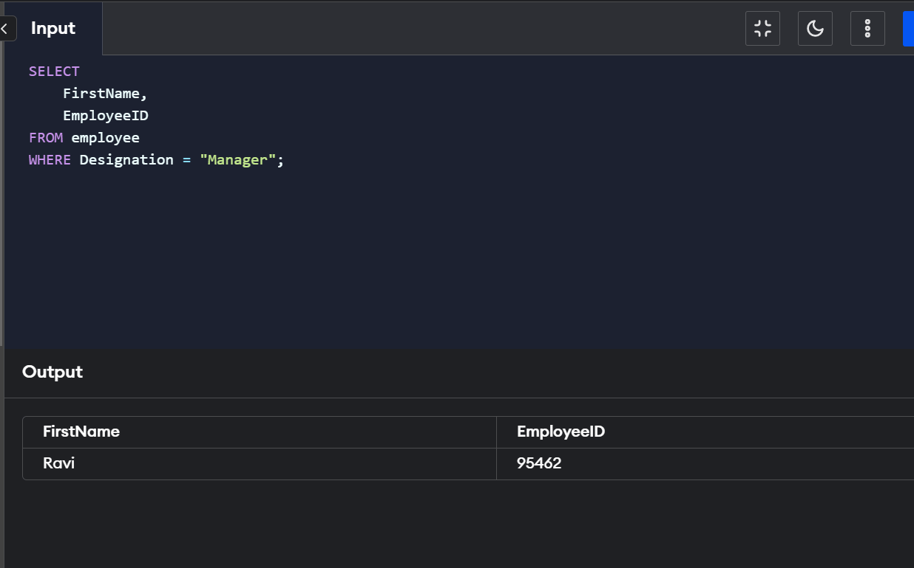
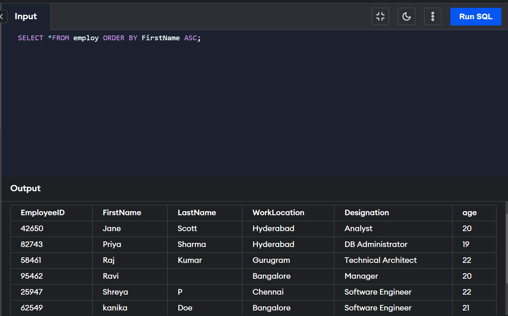
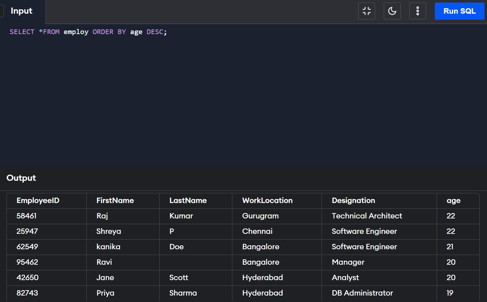

Clauses in SQL are similar to conditionals in high-level languages.
SQL being a query language requires a method to apply constraints on the data and for this we use Clauses.
We have a large variety in the SQL clauses like the Where clause, Union Clase, Order By clause etc.
Clauses help us to restrict and manage the data using valid constraints on the data in our database.
Use of SQL Clause
Some of the uses of SQL Clauses are as follows:
1. Allow us to apply constraints on data.
2. Help us to reduce the complexity of the query.
3. With the help of clauses, we can filter the data according to our requirements.
4. Allow us to restrict the number of outputs we need.
5. Help in writing user-friendly queries, which are easy to read and understand.
We have a variety of SQL clauses available. Let us now discuss each of them in detail.
It is an integral part of any query and allows us to apply constraints on the query output.
SELECT * FROM tableName WHERE condition;
Group By clause is used with the select statement to get similar data in manageable groups.
SELECT col1, col2,
col3 , .....
FROM tableName
WHERE conditions
GROUP BY col1, col2;
Allows us to explicitly decide the order of the output of our query.
SELECT col1, col2,
col3 , .....
FROM tableName
WHERE conditions
GROUP BY col1, col2
ORDER BY col1, col2


It comes in handy when we need to apply aggregate functions as we can’t use aggregate functions with the WHERE clause.
SELECT col1 , col2 , col3,.....
FROM tableName
WHERE condition
GROUP BY col1
HAVING condition
ORDER BY col1;